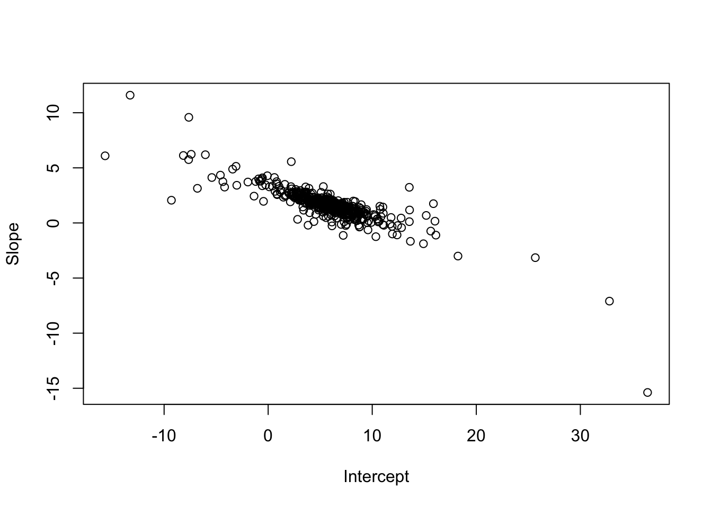

Please download and print the lecture material from here. After lecture, the recording will also appear in this section.
In-class Code
Remember that our goal is to estimate the linear relationship between data observations of response variable, \(y\), and its measured covariate, \(x\), following: \(Y = XB + \epsilon\), where \(\epsilon \sim N(0, \sigma^2 I).\) Our coefficients to estimate are therefore \(\hat{B}\), which is a column vector of the intercept and slope. We also estimate the standard deviation of the residuals (i.e., residual error), \(\hat{\sigma}\). To estimate the coefficients, we are attempting to minimize the residual sum of squares, \(|| \epsilon || ^ 2\). See Footnotes 4.11.1 for more information regarding this notation.
4.2 Generate the data
We’ll start with a very small data set to emphasize the basics, and then the in-class activity will go into more depth. Here, we’ll implement the OLS estimation with a single covariate that we demonstrated in lecture.
n=4# number observationsp=2# number of parameters# Covariate:x0=c(1,1,1,1)# placeholder for interceptx1=c(2,3,5,1)# value of xxmat=matrix(data =c(x0,x1), nrow =n, ncol =p)xmat
# residualsepsilon=c(0, -1, 1, 3)# Data observations:y=xmat%*%betas+epsilon
4.3 Plot the relationship
# Plot in layers## Create a blank plotting canvas, specifying axis limitsplot(x=NA,y=NA, xlab ="x", ylab ="y", ylim =c(0,max(y)), xlim =c(0,max(x1)))## Add data pointspoints(y~x1, pch =19, cex =2)## Add known linear relationshipabline(coef =betas, col ="black", lwd =2)# Show the residuals:segments(x0 =x1, x1 =x1, y0 =y, y1 =y-epsilon)# Show the model predictions, \hat{y}:y_hat=xmat%*%betaspoints(y_hat~x1, cex =1.25)
4.4 Estimate the coefficients using R’s lm() function
# Run the model:lm_out=lm(y~1+x1)# Show the summary outputsummary(lm_out)
Call:
lm(formula = y ~ 1 + x1)
Residuals:
1 2 3 4
-1.029 -1.657 1.086 1.600
Coefficients:
Estimate Std. Error t value Pr(>|t|)
(Intercept) 5.7714 2.0500 2.815 0.106
x1 1.6286 0.6565 2.481 0.131
Residual standard error: 1.942 on 2 degrees of freedom
Multiple R-squared: 0.7547, Adjusted R-squared: 0.6321
F-statistic: 6.153 on 1 and 2 DF, p-value: 0.1313
# Extract the estimated coefficientslm_coef=coef(lm_out)lm_coef
(Intercept) x1
5.771429 1.628571
4.5 Estimate the coefficients manually
Now we will use the matrix algebra and derivation of normal equations to estimate the intercept and slope from the observations, \(Y\). Remember that we estimate the coefficient vector, \(\hat{B}\) from: \[X^TX \hat{B} = X^T Y\]\[\hat{B} = (X^TX)^{-1} X^T Y\] These equations include the multiplicative inverse matrix, \((X^TX)^{-1}\). See the Footnotes 4.11.2 for more information about inverse matrices and the solve() function.
# Let's break up the normal equations into intermediates:xtx=t(xmat)%*%xmat## Use solve() to find inverse of xtx## why solve()? See Appendix, linked above.inv_xtx=solve(xtx)xty=t(xmat)%*%ybhat=inv_xtx%*%xty# More efficient:# Remember, xtx * bhat = xty# So we can use solve() againbhat_solve=solve(xtx, xty)# Are they the same?# How does this manual solution compare to lm()'s solution?
4.6 Plot the estimated relationships
# Plot in layers## Create a blank plotting canvas, specifying axis limitsplot(NA,NA, xlab ="x", ylab ="y", ylim =c(0,max(y)), xlim =c(0,max(x1)))## Add data pointspoints(y~x1, pch =19, cex =2)## Add known linear relationshipabline(coef =betas, col ="black", lwd =2)# Show the residuals:segments( x0 =x1, x1 =x1, y0 =y, y1 =y-epsilon,)# Show the model predictions, \hat{y}:y_hat=xmat%*%betaspoints(y_hat~x1, cex =1.25)# Add the lm() estimate:abline(coef =lm_coef, col ="orange", lty =2, lwd =2)# Add the manual OLS estimate:abline(coef =bhat_solve, col ="purple", lty =3, lwd =2)
4.7 Why are the \(\hat{B}\) different from true \(B\)?
Remember, we are estimating the coefficients by minimizing the sum of squared errors (SSE), \(|| \epsilon ||^2\).
You can see that the OLS strategy effectively minimized the SSE to zero.
4.8 Understanding Uncertainty in \(\hat{B}\)
While the OLS analysis estimates the regression coefficients, \(\hat{B}\), from the observed data \(Y\), our estimates of these coefficients have error (i.e., uncertainty), such that the estimates are only as good as the data. Specifically, if we have fewer data points (i.e., \(n\) is low), we have less certainty in \(\hat{B}\). In lecture, we showed, that: \[\hat{B} \sim N \left( B, (X^TX)^{-1} \hat{\sigma}^2 \right), \] and we know that \(\hat{\sigma}^2\) depends on sample size \(n\), following: \[\hat{\sigma}^2 \quad = \quad \frac{1}{n-p} (Y_{obs} - Y_{pred})^T (Y_{obs} - Y_{pred}) \quad = \quad \frac{1}{n-p} \hat{\epsilon}^T \hat{\epsilon}\]
Using these equations, we showed then that \(SE(\beta_i) = \sqrt{diag\left( (X^TX)^{-1} \right)_i \hat{\sigma}^2}\). Let’s calculate this manually and compare to the output of the lm() function.
# Extract the model summary, which has useful componentslm_out_summary=summary(lm_out)# Extract the estimated residual standard deviation, sigmaest_sigma=lm_out_summary$sigmaest_sigma
[1] 1.942017
# We already calculated (X^T X)^{-1} as inv_xtxbeta_cov_mat=inv_xtx*est_sigma^2beta_cov_mat
Compare these values to the output of the summary() of Section 4.4 in the column labelled Std. Error.
4.9 Confidence Intervals for \(\hat{B}\)
To calculate confidence intervals for \(\hat{B}\), we first must understand the \(t\) (a.k.a. Student’s \(t\)) probability distribution. This distribution represents the case when we are estimating the mean of a normally distributed variable and either the sample size is small or the variable’s standard deviation is unknown. Essentially, the \(t\) distribution increases the uncertainty (i.e., variance) in cases of low sample size (i.e., small \(n\)). With low sample size (and/or high number of parameters), the degrees of freedom of the \(t\)-distribution, \(\nu\) is low, whereas with high sample size, \(\nu\) is large. As \(\nu\) approaches infinity, the \(t\)-distribution approximates the standard normal distribution (i.e., \(N(\mu, \sigma)|\mu=0,\sigma=1\)).
It is the case for \(\hat{B} \sim N \left( B, (X^TX)^{-1} \hat{\sigma}^2 \right)\) that we do not know the mean (\(B\)), and we are estimating the variance, \(\hat{\sigma}^2\). Specifically, we are estimating the true mean vector, \(B\), as \(\hat{B}\), and we are estimating the variance of the residuals as \(\hat{\sigma}^2\). We can therefore re-write the uncertainty in \(\hat{B}\) as a multivariate \(t\) distribution: \[(\hat{B} - B) \sim t_{\nu} \left( 0, \Sigma \right),\] where the means are zero, \(\nu\) is the degrees of freedom (i.e., \(n-p\)), and \(\Sigma = (X^TX)^{-1} \hat{\sigma}^2\). \((\hat{B} - B)\) represents the deviation of the estimated coefficients from the true coefficients, which is why the distribution is centered around zero. It is perhaps easier to separate the individual estimated coefficients, \(\beta_i\), into their separate \(t\)-distributions, estimated as the off-diagonals of \((X^TX)^{-1} \hat{\sigma}^2\): \[(\hat{\beta}_i - \beta_i) \sim t_{\nu} \hat{\sigma},\] which shows that the \(t\)-distribution is scaled by the estimated \(SE(\hat{\beta}_i)\). As shown in Dr. Barber’s materials, using this information, we can derive the confidence interval (at the \(\alpha\) confidence level) calculation for \(\hat{\beta}_i\) as: \[ \hat{\beta}_i \pm t \left(\frac{1-\alpha}{2}, \nu \right) SE(\hat{\beta}_i),\] where the \(t()\) notation represents the critical value of the \(t\)-distribution with \(\nu\) degrees of freedom, \(t_{crit}\), for which \(P(z \le t_{crit}) = \frac{1-\alpha}{2}\), and \(z\) is a continuous, random variable.
Covariance of \(\hat{\beta}_i\)
Although it is convenient and easier to digest the confidence interval of individual \(\hat{\beta}_i\), we must realize that the estimates of the \(\beta_i\) can covary (i.e., have non-zero covariance), which is quantified in the variance-covariance matrix of \(\hat{B}\), \((X^TX)^{-1} \hat{\sigma}^2\). We will show how this is important below.
Let’s manually calculate the 95% confidence intervals in \(\hat{B}\) and compare to R’s internal function confint().
# Extract the degrees of freedom from the model (\nu)# which can also be calculated as n - pt_df=lm_out$df.residual# Calculate t critical for alpha = 0.05# This will give us the 95% conf interval (CI)t_crit=qt(1-(0.05/2), df =t_df)# Calculate the upper and lower CI for both betasci_int=lm_coef[1]+c(-1,1)*t_crit*se_beta[1]ci_slope=lm_coef[2]+c(-1,1)*t_crit*se_beta[2]# Construct a table of valuesci_mat=rbind(c(lm_coef[1], ci_int),c(lm_coef[2], ci_slope))colnames(ci_mat)=c("coef", "lowCI", "highCI")rownames(ci_mat)=c("intercept", "slope")ci_mat
# Compare these manual calculations to built-in# function confint(), which by default extracts the # 95% CI for a lm() model's coefficientsconfint(lm_out)
4.10 Propagate uncertainty in \(\hat{B}\) for predictions of \(Y\)
There are several ways to calculate and visualize our uncertainty in model predictions of observed data \(Y\) and unobserved data of the dependent variable (i.e., interpolation). The colored lines drawn on the figure in Section 4.6 represent the expected values of \(Y\) based on the OLS analysis’ estimate of \(\hat{B}\), but this line does not include uncertainty in these coefficient values.
4.10.1 Multivariate \(t\)-distribution method
First, we will calculate uncertainty by sampling from the multivariate \(t\) distribution that represents error in regression coefficients, \(\hat{B}\).
# We will "bootstrap" 1000 samples of intercept and slopeset.seed(3)n_samp=500# Draw from the multivariate t # which represents (\hat{B} - B)test_mat_deviates=mnormt::rmt(n_samp, mean =c(0,0), S =beta_cov_mat, df =t_df)# Now calculate the realized intercept and slope# using the t-distributed deviatestest_mat_t=cbind(lm_coef[1]+c(test_mat_deviates[,1]),lm_coef[2]+c(test_mat_deviates[,2]))# Calculate the 95% quantiles and compare to the # calculated 95% confidence intervals from aboveapply(test_mat_t, MARGIN =2, # applies function (FUN) to columns (dim 2) FUN =quantile, probs =c(0.025, 0.5, 0.975))
# Plot the relationship between intercept and slope# Notice the covarianceplot(test_mat_t, xlab ="Intercept", ylab ="Slope")

Next, for each pair of intercept and slope randomly drawn above, we will calculate the expected values of \(Y\) across the range of covariate \(x\). We will then summarize the 95% quantile of expected \(Y\) at each value of \(x\) in this interpolation. To do this, we need a function to calculate the expected value of \(Y\). This function will have the intercept and slope as inputs and will output the expected values of \(Y\) across a range of \(x\). Then, we will apply() this function using all of the values of intercept and slope, in a vectorized and therefore very efficient manner, rather than using any for loops.
# Create a matrix that holds the values of x# over which we want to interpolate the expected# values of Yx_fake_mat=cbind(rep(1, times =100),seq(0,max(x1),length.out =100))# Create a function that will calculate the expected valuesy_hat_fun=function(x, x_mat){x_mat%*%x}# Apply this function to all intercepts and slopes that# we drew from the multivariate ty_pred_mt=apply(test_mat_t, 1, y_hat_fun, x_mat=x_fake_mat)# Summarize the 95% quantile of the expected value of Y# at each value of x y_pred_mt_summary=apply(y_pred_mt, 1, quantile, probs =c(0.025, 0.975))str(y_pred_mt_summary)
R has a built-in function predict() (see specific variant predict.lm()) which calculates expected values of the dependent variable from a linear regression model estimated using the function lm().
# Note that 'newdata' must be a data frame that includes the ranges# of each covariate in the regression model for which you want # to generate interpolated or predicted values of the dependent variable# Here we are calculated the expected values as well as the # 95% confidence intervals for those expected valuesy_predict=predict(lm_out, newdata =data.frame(x1 =c(x_fake_mat[,2])), interval ="confidence", level =0.95)str(y_predict)
Let’s visualize the output of the two methods to compare.
# plotplot(x=NA,y=NA,xlab ="x", ylab ="y", xlim =c(0,max(x1)), ylim =c(-5, 25), pch =19)# Plot the expected values of Y for each pair of int/slope for(iin1:n_samp){lines(y_pred_mt[,i]~x_fake_mat[,2],# Reduce the opacity of each line col =scales::alpha("black", alpha =0.1), lwd =2)}# Add the data pointspoints(y~x1, col ='orange', pch =19, cex =2)# Add the expected values of Y from \hat{B}abline(coef =lm_coef, col ="orange", lwd =3)# Add the conf int of expected Y using multivariate tlines(y_pred_mt_summary[1,]~x_fake_mat[,2], lty =2, lwd =3, col ="orange")lines(y_pred_mt_summary[2,]~x_fake_mat[,2], lty =2, lwd =3, col ="orange")# Add the conf int of expected Y using predict() functionlines(y_predict[,"lwr"]~x_fake_mat[,2], lty =3, lwd =3, col ="purple")lines(y_predict[,"upr"]~x_fake_mat[,2], lty =3, lwd =3, col ="purple")
There is yet a third option to calculate the uncertainty in predicted (i.e., interpolated or extrapolated) values of \(Y\), which is to derive an exact calculation of the confidence interval using the \(t\) distribution, similar to that shown in Section 4.9. See Ch4.1 of Dr. Barber’s book for this derivation.
4.11 Footnotes
4.11.1 Euclidean norm & cross product
We often see the syntax, \(|| a ||\), which is the Euclidean norm of the \(n\)-sized vector \(a\): \[|| a || = \left( \sum_{i=1}^{n} a_i^2 \right) ^ {1/2} ,\] so that when we see \(|| a ||^2\), this results in the sum of squares of vector \(a\), \(\sum_{i=1}^{n} a_i^2\).
In the context of least squares regression, we are trying to minimize the residual sum of squares, where the residuals, \(\epsilon_i\), are in vector, \(\epsilon\). The sum of squares of vector \(\epsilon\) is therefore \(|| \epsilon ||^2\). Algebraically, we can find this value as the cross product of \(\epsilon\), which is \(\epsilon^{T}\epsilon\). Let’s do a coded example with vector \(x\).
# Vector of real numbersx=c(1, 2, 3, 4)# sum of squaressum(x^2)
# Euclidean norm also known as the 2-norm# so sum of squares is 2-norm, squarednorm(x, type ="2")^2
[1] 30
4.11.2solve() and Inverse of matrix
Suppose we have matrices \(A\), \(X\), and \(B\), and the following expression is true: \[AX=B.\]
Then, suppose \(X\) is unknown, such that we want to find the solution for \(X\), when we rearrange: \[X = A^{-1} B,\] where \(A^{-1}\) is the multiplicative inverse of matrix \(A\). To figure this out computationally, we can use the solve() function in R, as long as \(A\) is a square matrix and has an inverse.
# Create A and known XA=matrix(c(1,1,5,2), ncol =2)X=matrix(c(2,3), ncol =1)# Dot product to calculate BB=A%*%X# Suppose you have A and B, but want to find XX_solve=solve(A, B)# Did it work?X; X_solve
[,1]
[1,] 2
[2,] 3
[,1]
[1,] 2
[2,] 3
We can see, then, that solve() is internally evaluating \(A^{-1}\). Remember that \(A^{-1}\) is not trivial to calculate, as it is the matrix that must satisfy: \(AA^{-1} = I\), where \(I\) is an identity matrix. In fact, solve(A) returns the inverse of \(A\), if it exists.
# Ordinary Least Squares {#sec-ols}## Lecture materialPlease download and print the lecture material from here. After lecture, the recording will also appear in this section.## In-class Code {.unnumbered}Remember that our goal is to estimate the linear relationship between data observations of response variable, $y$, and its measured covariate, $x$, following: $Y = XB + \epsilon$, where $\epsilon \sim N(0, \sigma^2 I).$ Our coefficients to estimate are therefore $\hat{B}$, which is a column vector of the intercept and slope. We also estimate the standard deviation of the residuals (i.e., residual error), $\hat{\sigma}$. To estimate the coefficients, we are attempting to minimize the residual sum of squares, $|| \epsilon || ^ 2$. See [Footnotes @sec-crossprod] for more information regarding this notation.## Generate the dataWe'll start with a very small data set to emphasize the basics, and then the in-class activity will go into more depth. Here, we'll implement the OLS estimation with a single covariate that we demonstrated in lecture.```{r}n =4# number observationsp =2# number of parameters# Covariate:x0 =c(1,1,1,1) # placeholder for interceptx1 =c(2,3,5,1) # value of xxmat =matrix(data =c(x0,x1), nrow = n, ncol = p)xmat# Coefficients:## betas[1]: intercept## betas[2]: slopebetas =c(4, 2)xmat %*% betas# residualsepsilon =c(0, -1, 1, 3)# Data observations:y = xmat %*% betas + epsilon```## Plot the relationship```{r}# Plot in layers## Create a blank plotting canvas, specifying axis limitsplot(x=NA,y=NA, xlab ="x", ylab ="y",ylim =c(0,max(y)), xlim =c(0,max(x1)))## Add data pointspoints(y ~ x1, pch =19, cex =2)## Add known linear relationshipabline(coef = betas, col ="black", lwd =2)# Show the residuals:segments(x0 = x1, x1 = x1,y0 = y, y1 = y - epsilon)# Show the model predictions, \hat{y}:y_hat = xmat %*% betaspoints(y_hat ~ x1, cex =1.25)```## Estimate the coefficients using R's `lm()` function {#sec-lm-output}```{r}# Run the model:lm_out =lm(y ~1+ x1)# Show the summary outputsummary(lm_out)# Extract the estimated coefficientslm_coef =coef(lm_out)lm_coef```## Estimate the coefficients manuallyNow we will use the matrix algebra and derivation of normal equations to estimate the intercept and slope from the observations, $Y$. Remember that we estimate the coefficient vector, $\hat{B}$ from: $$X^TX \hat{B} = X^T Y$$ $$\hat{B} = (X^TX)^{-1} X^T Y$$ These equations include the multiplicative inverse matrix, $(X^TX)^{-1}$. See the [Footnotes @sec-solve] for more information about inverse matrices and the `solve()` function.```{r}# Let's break up the normal equations into intermediates:xtx =t(xmat) %*% xmat## Use solve() to find inverse of xtx## why solve()? See Appendix, linked above.inv_xtx =solve(xtx)xty =t(xmat) %*% ybhat = inv_xtx %*% xty# More efficient:# Remember, xtx * bhat = xty# So we can use solve() againbhat_solve =solve(xtx, xty)# Are they the same?# How does this manual solution compare to lm()'s solution?```## Plot the *estimated* relationships {#sec-est-plot}```{r}# Plot in layers## Create a blank plotting canvas, specifying axis limitsplot(NA,NA,xlab ="x", ylab ="y",ylim =c(0,max(y)),xlim =c(0,max(x1)))## Add data pointspoints(y ~ x1, pch =19, cex =2)## Add known linear relationshipabline(coef = betas,col ="black", lwd =2)# Show the residuals:segments(x0 = x1,x1 = x1,y0 = y,y1 = y - epsilon,)# Show the model predictions, \hat{y}:y_hat = xmat %*% betaspoints(y_hat ~ x1,cex =1.25)# Add the lm() estimate:abline(coef = lm_coef,col ="orange", lty =2, lwd =2)# Add the manual OLS estimate:abline(coef = bhat_solve,col ="purple", lty =3, lwd =2)```## Why are the $\hat{B}$ different from true $B$?Remember, we are estimating the coefficients by minimizing the sum of squared errors (SSE), $|| \epsilon ||^2$.```{r}# True sum of squares:sum(epsilon)^2# Estimated (i.e., minimized sum of squares):## From lm()sum(lm_out$residuals)^2## From manual OLSsum( (y - xmat %*% bhat_solve) )^2```You can see that the OLS strategy effectively minimized the SSE to zero.## Understanding Uncertainty in $\hat{B}$While the OLS analysis estimates the regression coefficients, $\hat{B}$, from the observed data $Y$, our estimates of these coefficients have error (i.e., uncertainty), such that the estimates are only as good as the data. Specifically, if we have fewer data points (i.e., $n$ is low), we have less certainty in $\hat{B}$. In lecture, we showed, that:$$\hat{B} \sim N \left( B, (X^TX)^{-1} \hat{\sigma}^2 \right), $$and we know that $\hat{\sigma}^2$ depends on sample size $n$, following:$$\hat{\sigma}^2 \quad = \quad \frac{1}{n-p} (Y_{obs} - Y_{pred})^T (Y_{obs} - Y_{pred}) \quad = \quad \frac{1}{n-p} \hat{\epsilon}^T \hat{\epsilon}$$Using these equations, we showed then that $SE(\beta_i) = \sqrt{diag\left( (X^TX)^{-1} \right)_i \hat{\sigma}^2}$. Let's calculate this manually and compare to the output of the `lm()` function.```{r}# Extract the model summary, which has useful componentslm_out_summary =summary(lm_out)# Extract the estimated residual standard deviation, sigmaest_sigma = lm_out_summary$sigmaest_sigma# We already calculated (X^T X)^{-1} as inv_xtxbeta_cov_mat = inv_xtx * est_sigma^2beta_cov_matse_beta =sqrt(diag(beta_cov_mat))se_beta```Compare these values to the output of the `summary()` of @sec-lm-output in the column labelled `Std. Error`. ## Confidence Intervals for $\hat{B}$ {#sec-conf-beta}To calculate confidence intervals for $\hat{B}$, we first must understand the $t$ (a.k.a. Student's $t$) probability distribution. This distribution represents the case when we are estimating the mean of a normally distributed variable and either the sample size is small or the variable's standard deviation is unknown. Essentially, the $t$ distribution increases the uncertainty (i.e., variance) in cases of low sample size (i.e., small $n$). With low sample size (and/or high number of parameters), the degrees of freedom of the $t$-distribution, $\nu$ is low, whereas with high sample size, $\nu$ is large. As $\nu$ approaches infinity, the $t$-distribution approximates the standard normal distribution (i.e., $N(\mu, \sigma)|\mu=0,\sigma=1$). ```{r}#| echo: false# Generate x sequencen_seq =1000x_seq =seq(-10, 10, length.out = n_seq)t_pdf_nu2 =dt(x_seq, df =2)t_pdf_nu100 =dt(x_seq, df =100)norm_pdf =dnorm(x_seq, mean =0, sd =1)# compare to t-100plot(NA,NA, xlab ="x", ylab ="P(x)", xlim =range(x_seq), ylim =c(0, 0.5))lines(norm_pdf~x_seq, col ="red", lwd =2)lines(t_pdf_nu2~x_seq, col ="blue", lwd =2)lines(t_pdf_nu100~x_seq, col ="blue", lwd =1.2, lty =2)legend(x =2.5, y =0.4,legend =c("Standard Normal", expression(italic(t)[2]), expression(italic(t)[100])),lty =c(1,1,2), col =c("red", "blue", "blue"), bty ="n")```It is the case for $\hat{B} \sim N \left( B, (X^TX)^{-1} \hat{\sigma}^2 \right)$ that we do not know the mean ($B$), and we are estimating the variance, $\hat{\sigma}^2$. Specifically, we are estimating the true mean vector, $B$, as $\hat{B}$, and we are estimating the variance of the residuals as $\hat{\sigma}^2$. We can therefore re-write the uncertainty in $\hat{B}$ as a multivariate $t$ distribution: $$(\hat{B} - B) \sim t_{\nu} \left( 0, \Sigma \right),$$where the means are zero, $\nu$ is the degrees of freedom (i.e., $n-p$), and $\Sigma = (X^TX)^{-1} \hat{\sigma}^2$. $(\hat{B} - B)$ represents the deviation of the estimated coefficients from the true coefficients, which is why the distribution is centered around zero. It is perhaps easier to separate the individual estimated coefficients, $\beta_i$, into their separate $t$-distributions, estimated as the off-diagonals of $(X^TX)^{-1} \hat{\sigma}^2$:$$(\hat{\beta}_i - \beta_i) \sim t_{\nu} \hat{\sigma},$$which shows that the $t$-distribution is scaled by the estimated $SE(\hat{\beta}_i)$. As shown in Dr. Barber's materials, using this information, we can derive the confidence interval (at the $\alpha$ confidence level) calculation for $\hat{\beta}_i$ as: $$ \hat{\beta}_i \pm t \left(\frac{1-\alpha}{2}, \nu \right) SE(\hat{\beta}_i),$$where the $t()$ notation represents the *critical value* of the $t$-distribution with $\nu$ degrees of freedom, $t_{crit}$, for which $P(z \le t_{crit}) = \frac{1-\alpha}{2}$, and $z$ is a continuous, random variable.::: {.callout-note}## Covariance of $\hat{\beta}_i$Although it is convenient and easier to digest the confidence interval of individual $\hat{\beta}_i$, we must realize that the estimates of the $\beta_i$ can covary (i.e., have non-zero covariance), which is quantified in the variance-covariance matrix of $\hat{B}$, $(X^TX)^{-1} \hat{\sigma}^2$. We will show how this is important below.:::Let's manually calculate the 95% confidence intervals in $\hat{B}$ and compare to R's internal function `confint()`.```{r}# Extract the degrees of freedom from the model (\nu)# which can also be calculated as n - pt_df = lm_out$df.residual# Calculate t critical for alpha = 0.05# This will give us the 95% conf interval (CI)t_crit =qt(1-(0.05/2), df = t_df)# Calculate the upper and lower CI for both betasci_int = lm_coef[1] +c(-1,1)*t_crit*se_beta[1]ci_slope = lm_coef[2] +c(-1,1)*t_crit*se_beta[2]# Construct a table of valuesci_mat =rbind(c(lm_coef[1], ci_int),c(lm_coef[2], ci_slope))colnames(ci_mat) =c("coef", "lowCI", "highCI")rownames(ci_mat) =c("intercept", "slope")ci_mat# Compare these manual calculations to built-in# function confint(), which by default extracts the # 95% CI for a lm() model's coefficientsconfint(lm_out)```## Propagate uncertainty in $\hat{B}$ for predictions of $Y$There are several ways to calculate and visualize our uncertainty in model predictions of observed data $Y$ and unobserved data of the dependent variable (i.e., interpolation). The colored lines drawn on the figure in @sec-est-plot represent the expected values of $Y$ based on the OLS analysis' estimate of $\hat{B}$, but this line does not include uncertainty in these coefficient values. ### Multivariate $t$-distribution methodFirst, we will calculate uncertainty by sampling from the multivariate $t$ distribution that represents error in regression coefficients, $\hat{B}$. ```{r}# We will "bootstrap" 1000 samples of intercept and slopeset.seed(3)n_samp =500# Draw from the multivariate t # which represents (\hat{B} - B)test_mat_deviates = mnormt::rmt(n_samp, mean =c(0,0), S = beta_cov_mat, df = t_df)# Now calculate the realized intercept and slope# using the t-distributed deviatestest_mat_t =cbind( lm_coef[1] +c(test_mat_deviates[,1]), lm_coef[2] +c(test_mat_deviates[,2]))# Calculate the 95% quantiles and compare to the # calculated 95% confidence intervals from aboveapply(test_mat_t, MARGIN =2, # applies function (FUN) to columns (dim 2)FUN = quantile, probs =c(0.025, 0.5, 0.975))# Compareci_mat# Plot the relationship between intercept and slope# Notice the covarianceplot(test_mat_t, xlab ="Intercept", ylab ="Slope")```Next, for each pair of intercept and slope randomly drawn above, we will calculate the expected values of $Y$ across the range of covariate $x$. We will then summarize the 95% quantile of expected $Y$ at each value of $x$ in this interpolation. To do this, we need a function to calculate the expected value of $Y$. This function will have the intercept and slope as inputs and will output the expected values of $Y$ across a range of $x$. Then, we will `apply()` this function using all of the values of intercept and slope, in a vectorized and therefore very efficient manner, rather than using any `for` loops. ```{r}# Create a matrix that holds the values of x# over which we want to interpolate the expected# values of Yx_fake_mat =cbind(rep(1, times =100),seq(0,max(x1),length.out =100) )# Create a function that will calculate the expected valuesy_hat_fun =function(x, x_mat){ x_mat %*% x}# Apply this function to all intercepts and slopes that# we drew from the multivariate ty_pred_mt =apply(test_mat_t, 1, y_hat_fun, x_mat=x_fake_mat)# Summarize the 95% quantile of the expected value of Y# at each value of x y_pred_mt_summary =apply(y_pred_mt, 1, quantile, probs =c(0.025, 0.975))str(y_pred_mt_summary)```### `predict()` function methodR has a built-in function `predict()` (see specific variant `predict.lm()`) which calculates expected values of the dependent variable from a linear regression model estimated using the function `lm()`.```{r}# Note that 'newdata' must be a data frame that includes the ranges# of each covariate in the regression model for which you want # to generate interpolated or predicted values of the dependent variable# Here we are calculated the expected values as well as the # 95% confidence intervals for those expected valuesy_predict =predict(lm_out,newdata =data.frame(x1 =c(x_fake_mat[,2])),interval ="confidence", level =0.95)str(y_predict)```### Compare the two methods Let's visualize the output of the two methods to compare. ```{r}# plotplot(x=NA,y=NA,xlab ="x", ylab ="y",xlim =c(0,max(x1)), ylim =c(-5, 25), pch =19)# Plot the expected values of Y for each pair of int/slope for(i in1:n_samp){lines(y_pred_mt[,i] ~ x_fake_mat[,2],# Reduce the opacity of each linecol = scales::alpha("black", alpha =0.1), lwd =2)}# Add the data pointspoints(y ~ x1, col ='orange', pch =19, cex =2)# Add the expected values of Y from \hat{B}abline(coef = lm_coef, col ="orange", lwd =3)# Add the conf int of expected Y using multivariate tlines(y_pred_mt_summary[1,] ~ x_fake_mat[,2], lty =2, lwd =3, col ="orange")lines(y_pred_mt_summary[2,] ~ x_fake_mat[,2], lty =2, lwd =3, col ="orange")# Add the conf int of expected Y using predict() functionlines(y_predict[,"lwr"]~ x_fake_mat[,2], lty =3, lwd =3, col ="purple")lines(y_predict[,"upr"]~ x_fake_mat[,2], lty =3, lwd =3, col ="purple")```There is yet a third option to calculate the uncertainty in predicted (i.e., interpolated or extrapolated) values of $Y$, which is to derive an exact calculation of the confidence interval using the $t$ distribution, similar to that shown in @sec-conf-beta. See Ch4.1 of Dr. Barber's book for this derivation. ## Footnotes### Euclidean norm & cross product {#sec-crossprod}We often see the syntax, $|| a ||$, which is the Euclidean norm of the $n$-sized vector $a$: $$|| a || = \left( \sum_{i=1}^{n} a_i^2 \right) ^ {1/2} ,$$ so that when we see $|| a ||^2$, this results in the sum of squares of vector $a$, $\sum_{i=1}^{n} a_i^2$.In the context of least squares regression, we are trying to minimize the residual sum of squares, where the residuals, $\epsilon_i$, are in vector, $\epsilon$. The sum of squares of vector $\epsilon$ is therefore $|| \epsilon ||^2$. Algebraically, we can find this value as the cross product of $\epsilon$, which is $\epsilon^{T}\epsilon$. Let's do a coded example with vector $x$.```{r}# Vector of real numbersx =c(1, 2, 3, 4)# sum of squaressum(x^2)# Evaluated as cross-productt(x) %*% x## Or with crossprod()crossprod(x,x)# Euclidean norm also known as the 2-norm# so sum of squares is 2-norm, squarednorm(x, type ="2") ^2```### `solve()` and Inverse of matrix {#sec-solve}Suppose we have matrices $A$, $X$, and $B$, and the following expression is true: $$AX=B.$$Then, suppose $X$ is unknown, such that we want to find the solution for $X$, when we rearrange: $$X = A^{-1} B,$$ where $A^{-1}$ is the multiplicative inverse of matrix $A$. To figure this out computationally, we can use the `solve()` function in R, as long as $A$ is a square matrix and has an inverse.```{r}# Create A and known XA =matrix(c(1,1,5,2), ncol =2)X =matrix(c(2,3), ncol =1)# Dot product to calculate BB = A %*% X# Suppose you have A and B, but want to find XX_solve =solve(A, B)# Did it work?X; X_solve```We can see, then, that `solve()` is internally evaluating $A^{-1}$. Remember that $A^{-1}$ is not trivial to calculate, as it is the matrix that must satisfy: $AA^{-1} = I$, where $I$ is an identity matrix. In fact, `solve(A)` returns the inverse of $A$, if it exists.```{r}inv_A =solve(A)#Did it work?(inv_A %*% B)X```